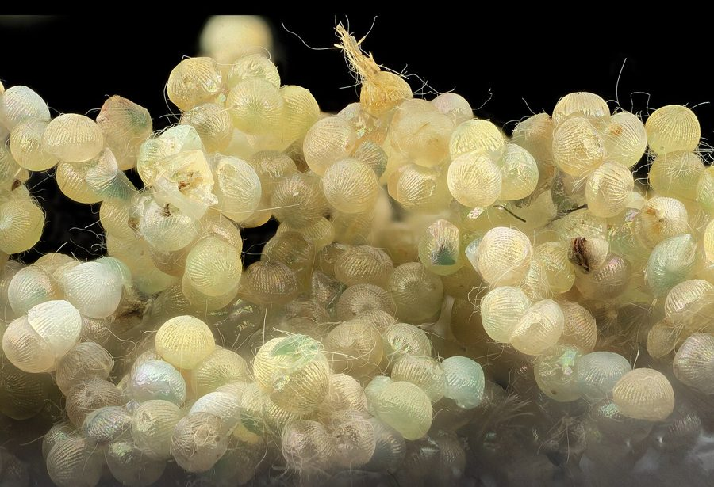

फॉल आर्मीवर्मFall Armyworm
Spodoptera frugiperda · Noctuidae · INS-0105

- Scientific nameवैज्ञानिक नाम
- Spodoptera frugiperda (J.E. Smith, 1797)
- Familyकुल
- Noctuidae
- Hindiहिंदी
- फॉल आर्मीवर्म
- Local namesस्थानीय नाम
- fall armyworm, fall army worm, armyworm, phal armyworm
- Status hereयहाँ की स्थिति
- invasive
- Movementआवागमन
- Resident, here all year
- IUCNIUCN
- not evaluated
- Reviewसमीक्षा
- audited and independently read
When to look कब देखें
Present all year.साल भर मौजूद।
Tell it apart from इनसे अलग पहचानें
फॉल आर्मीवर्म / Fall Armyworm
Spodoptera frugiperda (J.E. Smith, 1797) — Noctuidae
फॉल आर्मीवर्म — यह एक विदेशी खतरनाक कीट है जो मूल रूप से अमेरिका से आया था और पिछले कुछ सालों में पूरे एशिया में फैल गया है। यह मक्का, ज्वार, गन्ना और अन्य फसलों को बहुत नुकसान पहुँचाता है। इसकी इल्ली (caterpillar) गहरे रंग की होती है, जिसके शरीर पर हल्की या सफ़ेद लकीरें होती हैं। इल्ली बहुत भूखी होती है और पत्तियों को खरगोश की तरह अलग-अलग टुकड़ों में काट देती है। वयस्क पतंगा रात का होता है और दिन में छिपा रहता है। इसका प्रकोप बरसात के मौसम में बहुत ज़्यादा होता है।
Quick Identification त्वरित पहचान
| Feature | Description |
|---|---|
| Caterpillar Size | Large caterpillar (32–35 mm when mature); dark brown or grey body |
| Larval Markings | Yellow or orange lateral stripes; white or pale longitudinal lines down the back; bold head markings |
| Head Capsule | Distinctly marked head with a white or pale "Y-shaped" marking on the face |
| Feeding Damage | Creates ragged, irregular holes in leaves; skeletonization of foliage; shredded leaves |
| Frass | Large, dark, granular droppings visible on affected leaves and plants |
| Adult Moth | Grey-brown forewing; hindwings white or pale; night-active |
Field tip: Look for ragged, torn leaves on maize and other crops with large dark caterpillars inside. The distinctive white "Y-shaped" head marking on dark caterpillars is diagnostic. Damage appears as irregular holes and skeletonization rather than the clean circular holes of other crop pests.
Morphology आकारिकी
Biometrics (typical measurements):
| Stage / Part | Measurement |
|---|---|
| Egg diameter | 0.4–0.5 mm |
| Mature larval length | 32–35 mm |
| Adult male forewing length | 16–18 mm |
| Adult female forewing length | 17–19 mm |
| Adult wingspan | 37–40 mm |
Egg: Small, spherical, white or off-white, laid in clusters of 50–200, covered with scales from the female's abdomen.
Larva: 6 instars. Newly hatched larvae are pale or white. Mature larvae are dark brown, grey, or occasionally greenish, with distinct lateral stripes (yellow or orange), and white or pale longitudinal lines running the length of the body. The head is dark brown or black with a distinctive white or pale "Y-shaped" marking (chalky or frosted appearance) on the front. The body has scattered dark tubercles with setae.
Pupa: Dark brown, 11–13 mm, in a earthen cell in soil.
Adult Moth: Forewings are pale brown to grey with complex patterns of dark lines and bands. Hindwings are white or very pale. The antennae are simple (filiform) in females and bipectinate in males.
Larval Stage
The larva goes through six instars, with the final instar lasting 7–10 days before pupation.
- Newly hatched larva: Tiny (1–2 mm), pale, gregarious initially, then becomes solitary.
- Mature larva: Dark-coloured, with distinctive head markings; highly voracious feeders.
- Host plant damage: Creates ragged, irregular holes and skeletonization of leaves.
Behaviour & Ecology व्यवहार और पारिस्थितिकी
Highly polyphagous and invasive. The Fall Armyworm is a generalist pest capable of feeding on over 350 plant species, including major crops (maize, sorghum, rice, sugar cane, pastures) and vegetable crops. Unlike the Yellow Stem Borer, which is monophagous on rice, the Fall Armyworm is extremely adaptable and can shift between crops. The moths are nocturnal and highly migratory, capable of flying hundreds of kilometers. Populations can increase rapidly under favorable conditions, with 3–6 generations per year depending on climate.
Invasive status in India: First recorded in India in 2018 in Karnataka (Shivamogga) and has since spread throughout the country. It is a major threat to maize cultivation and is actively managed through biological and chemical controls.
Life Cycle / Phenology जीवन चक्र
- Reproduction: Produces 3 to 6 generations per year depending on temperature and availability of hosts.
- Oviposition: Females lay egg clusters (50–200) on the upper surface of leaves, particularly on maize plants and other crops.
- Developmental times (at 25–30°C):
- Egg incubation: 3 to 4 days.
- Larval period: 14 to 30 days (6 instars), depending on food quality and temperature. Final instar is longest.
- Pupation: Larvae burrow 2–5 cm into soil to pupate. Pupal stage lasts 8 to 10 days.
- Adult lifespan: 7 to 10 days.
Host Plants or Prey आहार
Primary host plants (crops damaged):
- Zea mays (Maize / मक्का)
- Sorghum bicolor (Sorghum / ज्वार)
- Oryza sativa (Rice / धान)
- Saccharum officinarum (Sugar cane / गन्ना)
- Triticum aestivum (Wheat / गेहूँ)
- Multiple vegetable crops: Brassica, Solanaceae, Fabaceae
Over 350 recorded plant species globally.
Predators / Natural Enemies शत्रु
- Parasitoid Wasps: Cotesia flavipes, Telonomus species, and other native and introduced parasitoids.
- Spiders: Ground spiders and web-building spiders.
- Predatory insects: Ground beetles, carabids, and robber flies.
- Birds: Insectivorous birds may predate adults and larvae.
Agricultural / Human Relevance कृषि प्रासंगिकता
Major agricultural threat. The Fall Armyworm is among the most damaging crop pests globally, causing estimated losses of USD 1.5–5 billion annually. In India, it poses a severe threat to maize cultivation. Crop damage is heaviest during the monsoon and post-monsoon period (August to October) when maize is in critical growth stages.
Control methods:
- Cultural control: Field sanitation, removal of crop residue, deep ploughing to destroy pupae in soil.
- Biological control: Releasing parasitoid wasps such as Cotesia flavipes; encouraging natural enemies through farmer field schools.
- Chemical control: Systemic insecticides and insecticide-treated seed for early-stage management.
- Host plant resistance: Planting maize varieties with tolerance or resistance traits (ongoing research).
Expected Locally स्थानीय रूप से अपेक्षित
Not a field record. Written from published accounts for eastern Uttar Pradesh. No confirmed local sighting yet — if you have seen it, that is what the atlas needs.
अभी तक स्थानीय पुष्टि नहीं। यह विवरण प्रकाशित स्रोतों से है, किसी अवलोकन से नहीं।
The Fall Armyworm is to be expected in Basti district wherever maize, sorghum, and other susceptible crops are grown, particularly during the monsoon and post-monsoon season (June to November). Fields planted with maize in June–July should be monitored closely for infestation from August onwards. Look for ragged, torn leaves with large dark caterpillars bearing white "Y-shaped" head markings. Farmers should implement integrated pest management strategies combining cultural, biological, and chemical controls. The first documented local record would contribute to understanding the pest's spread and impact in the region; send observations to the atlas contact on the About page.
Distribution वितरण
Global range: Native to the Americas (North and South America). Since 2016, recorded in Africa, Asia, and now spreading across the Indian subcontinent.
In India: First recorded in 2018 in Maharashtra; now present in nearly all states growing maize and other susceptible crops.
In Uttar Pradesh: Present in all maize-growing districts, including the eastern UP region.
In Basti district / eastern UP: Expected wherever maize and other susceptible crops are cultivated.
Research Questions शोध प्रश्न
Anyone can investigate these | कोई भी इन प्रश्नों की जाँच कर सकता है
- What is the percentage parasitization of Fall Armyworm caterpillars by native parasitoid wasps in untreated versus treated fields in Basti? — Collect caterpillars and monitor wasp emergence.
- How does maize variety (traditional vs. hybrid) affect caterpillar survival and damage levels? — Conduct comparative damage surveys.
- What percentage of Fall Armyworm larvae successfully develop to pupation in soil under different cultivation practices? / बस्ती में अलग-अलग खेती तरीकों से कितने फॉल आर्मीवर्म लार्वा पप्यूटेशन तक सफलतापूर्वक पहुँचते हैं? — Excavate soil and count pupae.
- Do Fall Armyworm moths show migration patterns (directional flight) during specific seasons? — Conduct light trap surveys and record flight direction.
- Which field margin vegetation supports the highest populations of parasitoid wasps? — Survey field margins with different plant communities.
Similar Species मिलती-जुलती प्रजातियाँ
| Species | How to tell apart | हिंदी | |
|---|---|---|---|
| [[tobacco_cutworm\ | Tobacco Cutworm]] (Spodoptera litura) | Head markings different (white band instead of Y); larva more uniformly dark; different host preference | तंबाकू कुंवर — सिर का निशान अलग |
| Armyworm (Pseudaletia unipuncta) | Smaller; paler green larva; longitudinal white lines less distinct | आर्मीवर्म — पीला-हरा |
Field rule: Large dark caterpillar with white "Y-shaped" head marking, white or yellow lateral stripes, and ragged leaf damage (not circular holes), is the Fall Armyworm.
Taxonomy & Classification वर्गीकरण
Original description. John E. Smith described the Fall Armyworm as Noctua frugiperda in 1797 in Natural History of the Lepidopterous Insects of Georgia. The type locality is Georgia, USA. The genus Spodoptera was established by Guenée in 1852. The specific name frugiperda means "grain-destroying" in Latin (frugum = grain, perda = destroyer).
Subspecies. At least two subspecies are recognized based on host plant preference (corn-strain and rice-strain) but taxonomic treatment remains controversial.
Family and order placement. Order Lepidoptera, family Noctuidae (owlet moths), subfamily Noctuinae.
Phylogenetic notes. Spodoptera frugiperda belongs to a group of migratory noctuid moths and is closely related to S. litura (Tobacco Cutworm).
IUCN status rationale. Not evaluated (NE) by the IUCN Red List. An invasive species globally with no conservation interest.
Photo Gallery फोटो गैलरी
No photos yet — add field photos to media/species/fall_armyworm/ and run node scripts/sync_photos.js.
Photos needed आवश्यक फोटो
- [ ] Caterpillar on plant (पौधे पर इल्ली)
- [ ] Head capsule showing Y-marking (सिर का निशान)
- [ ] Damage on maize (नुकसान)
References संदर्भ
- Smith, J.E. (1797). Natural History of the Lepidopterous Insects of Georgia. Philadelphia. [original description]
- Czepak, C., Albernaz, K.C., Vivan, L.M., Guimarães, H.O. & Carvalhais, T. (2013). First record of Spodoptera frugiperda (Lepidoptera, Noctuidae) in Brazil. Pesquisa Agropecuária Tropical 43(1): 110–113.
- Goergen, G., Kumar, P.L., Sankung, S.B., Togola, A. & Tamò, M. (2016). First report of outbreaks of the fall armyworm Spodoptera frugiperda (J.E. Smith) (Lepidoptera, Noctuidae), a new alien invasive pest in West and Central Africa. PLOS ONE 11(10): e0165632.
- Sharanabasappa, D., Kalleshwaraswamy, C.M., Asokan, R., Swamy, H.M.M., Maruthi, M.S., Pavithra, H.B., Hegde, K., Nage, S., Nagesh, M., Subbarayappa, C.T. & Mani, M. (2018). First report of the fall armyworm, Spodoptera frugiperda (J.E. Smith) (Lepidoptera: Noctuidae), an alien invasive pest on maize in India. Pest Management in Horticultural Ecosystems 24(2): 145–149.
- CABI Crop Protection Compendium (2024). Spodoptera frugiperda (fall armyworm) datasheet.
- GBIF Occurrence Data — Spodoptera frugiperda, Uttar Pradesh (2010–2025).
Source file: species/fauna/insects/fall_armyworm.md